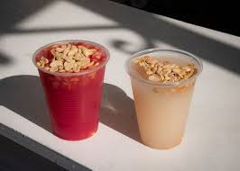
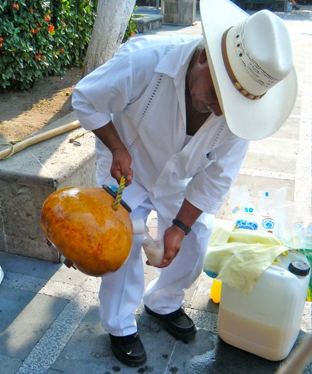
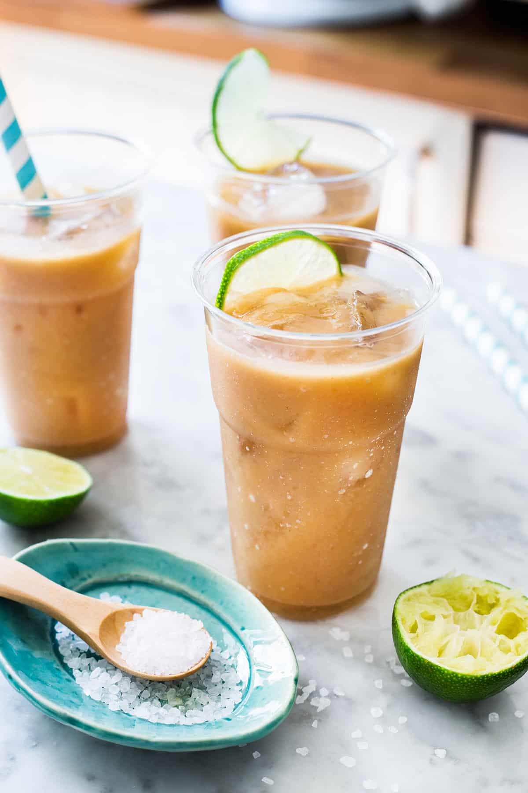
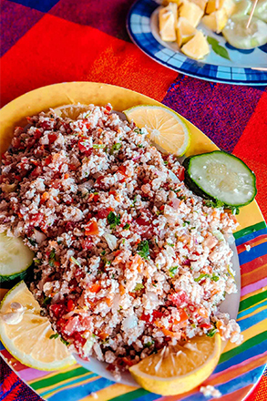
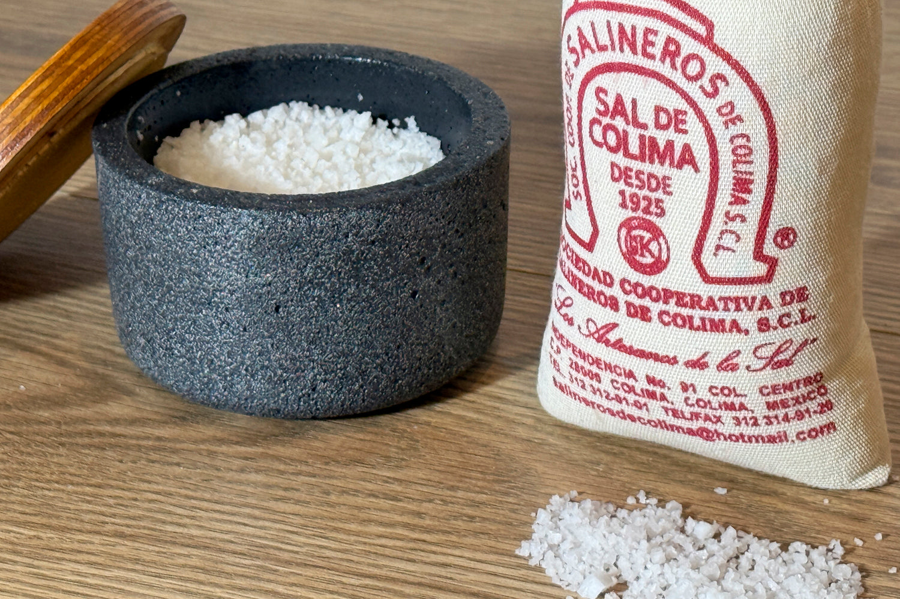
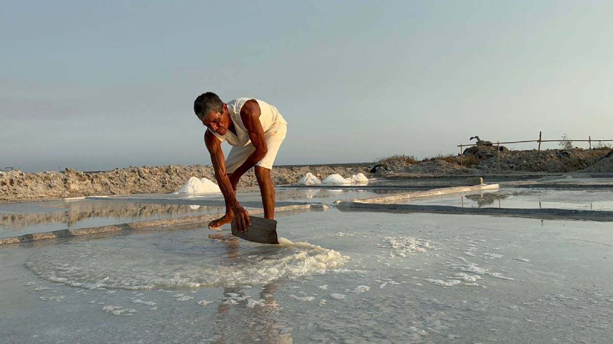
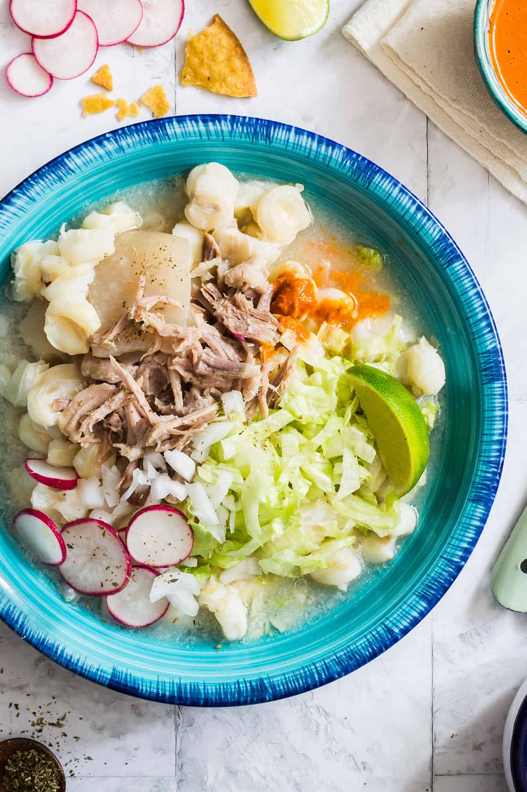

Fresh Tuba
Fresh tuba is usually served cold and may include chopped fruit or nuts.
Traditional flavors shaped by the coast, local markets, and Colima culture.


Tuba is one of Colima’s most traditional drinks, made from fresh palm sap and often served cold with peanuts. Its origins trace back to Filipino influence introduced through Pacific trade routes during the colonial era, which helped make it part of local coastal culture.

Fresh tuba is usually served cold and may include chopped fruit or nuts.

Tejuino is made from fermented corn masa, piloncillo, and water, then served cold with lime and salt.

Because Manzanillo is a coastal city, seafood dishes like ceviche are very common.Ceviche is prepared with fish marinated in lime juice and served with tostadas.

Colima sea salt is harvested by hand and valued for its mineral-rich flavor.

Traditional salt fields still use sun-drying methods that have existed for centuries.

Pozole is a hominy stew commonly served with cabbage, radish, onion, lime, and salsa.
| Food | Flavor | served |
|---|---|---|
| Tuba | Sweet | Cold |
| Tejuino | Sweet-sour | Cold |
| Pozole | Savory | Hot |